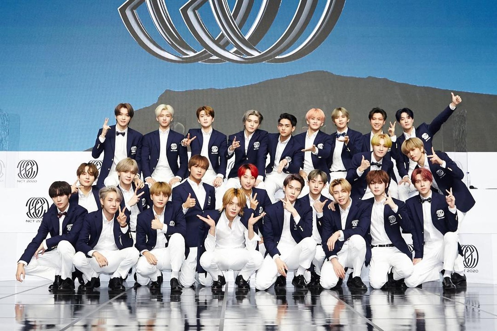

韓團
(韓國女團asepa)
(韓國男團NCT)
(韓國女團IVE)
(韓國男團BTS)
淺談韓團：
韓團，通常指的是韓國的流行音樂團體，这些團體多由韓國的娛樂公司透過嚴格的選拔、培訓和打造而成。韓團的音樂風格多元，不僅限於流行音樂，還包括Hip-hop、R&B、EDM等多種風格，他們的音樂和表演常常帶有鮮明的視覺風格和高水平的舞蹈表演。
韓團成員通常在年幼時就進入娛樂公司成為練習生，經過多年的嚴格訓練，涵蓋唱歌、跳舞、演技、語言等多方面技能。這一培訓過程既艱苦又競爭激烈，最終只有少數能夠正式出道。
韓團擁有非常活躍和忠實的粉絲群體。粉絲不僅支持他們的音樂作品，還會積極參與應援活動，如購買專輯、參加演唱會和在社交媒體上推廣。許多韓團還有自己的官方粉絲俱樂部和粉絲色，這是韓團文化中的獨特現象。
隨著全球化和數字媒體的發展，韓團的影響力已經遠達全球。通過YouTube、Spotify和其他國際平台，韓團的音樂和音樂影片吸引了全世界的觀眾。韓團如BTS和Blackpink等已經成為全球性的現象，不僅在亞洲，在美國、歐洲等地也擁有大量粉絲。
韓團的由來：
韓國流行音樂（K-pop）的歷史可以追溯到20世紀初，但其作為一種全球現象的真正起源是在1990年代中後期。這裡是一個關於韓團歷史由來的概述：
早期發展 (1960s-1980s)，韓國流行音樂的早期被稱為“Trot”，受到西方音樂的影響逐漸形成了更多樣化的音樂風格。在1980年代，隨著韓國經濟的快速發展和信息技術的引進，音樂市場開始逐步現代化，涌現出一批受西方流行音樂影響的藝人。
現代K-pop的誕生 (1990s)，1990年代可以被視為K-pop現代形式的起點。1992年，Seo Taiji and Boys的出現標誌著韓國流行音樂的一個轉折點。他們融合了嘻哈、搖滾、R&B等多種西方音樂元素，並且在歌詞中加入了社會意識，這在當時的韓國音樂界是前所未有的。
第一波海外成功 (Late 1990s-2000s)，隨著H.O.T.、S.E.S.和其他第一代偶像團體的成功，K-pop開始擴展到亞洲其他地區，尤其是中國和日本。這些團體的成功展示了K-pop的商業潛力，並鼓勵更多的娛樂公司投入到偶像培養和市場開拓中。
全球擴展 (2010s)，2010年代初，隨著社交媒體和YouTube的興起，K-pop的國際影響力開始急劇上升。PSY的《江南Style》在2012年成為全球現象，使K-pop音樂達到了前所未有的國際關注度。此後，團體如BIGBANG、EXO、BTS等在全球範圍內取得了巨大成功。
當代高峰和多樣性 (Late 2010s-Present)，近年來，團體如BTS和BLACKPINK等不僅在亞洲，也在美國和歐洲等西方市場取得了重大突破，他們的音樂和文化影響力橫跨全球。K-pop不僅限於音樂本身，還包括時尚、舞蹈和一個龐大的網絡粉絲文化。
韓團的魅力：
- 音樂和表演風格：韓團以其多樣化的音樂風格聞名，從嘻哈、R&B到電子舞曲等，總有一款能觸動人心。他們的表演不僅限於音樂，精心設計的舞蹈編排和舞台表演是他們的重要特色，使得每次演出都像一場視覺和聽覺的盛宴。
- 視覺藝術和概念：韓團的音樂視頻和專輯藝術通常包含精心策劃的視覺概念，這些概念不僅美觀且富含故事性，增加了音樂的深度和粉絲的參與感。每次回歸都有新的主題和風格，這使得粉絲們始終對未來的作品保持高度期待。
- 全球性的吸引力：韓團的音樂和文化超越了語言和地理的界限，吸引了全球範圍內的粉絲。他們的全球巡演經常吸引成千上萬的觀眾，顯示了他們在世界各地的廣泛影響力。
- 粉絲文化：韓團的粉絲文化非常獨特，粉絲通過購買專輯、參加粉絲見面會、在社交媒體上推廣等方式積極支持自己喜愛的團體。許多韓團還有自己的官方粉絲俱樂部名稱和應援色，這增加了粉絲和偶像之間的聯繫。
- 社會影響力：許多韓團不僅在音樂上取得成功，他們還積極參與各種社會和慈善活動，如支持教育、反對暴力和環境保護等。這些活動加深了他們作為公眾人物的正面形象，也激勵了粉絲進行社會貢獻。
這些特點綜合起來，形成了韓團獨特且吸引人的全球現象。不論是他們的音樂、風格還是積極的社會參與，都使得韓團在全球範圍內擁有廣泛的粉絲基礎和深遠的文化影響力。